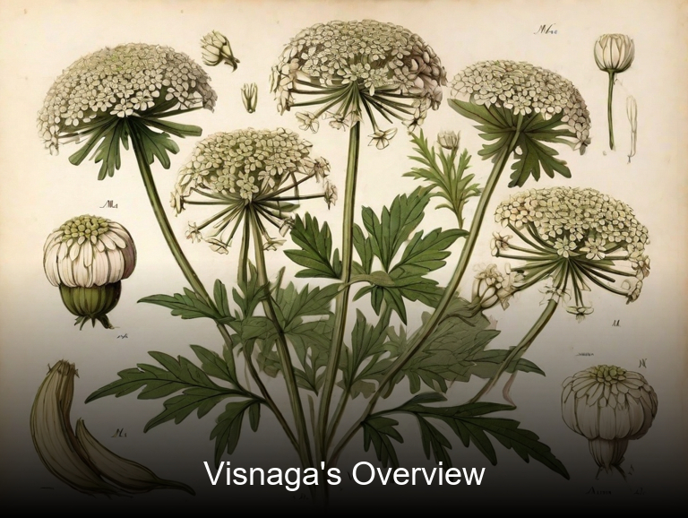
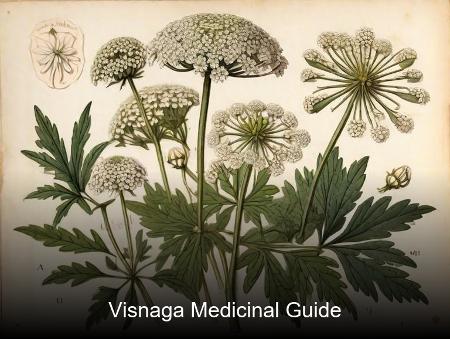
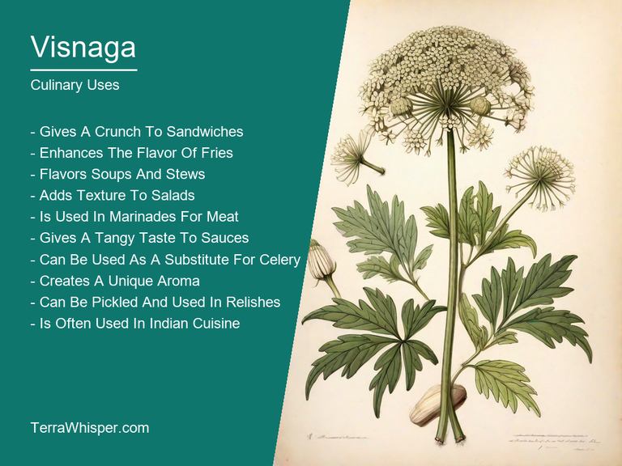
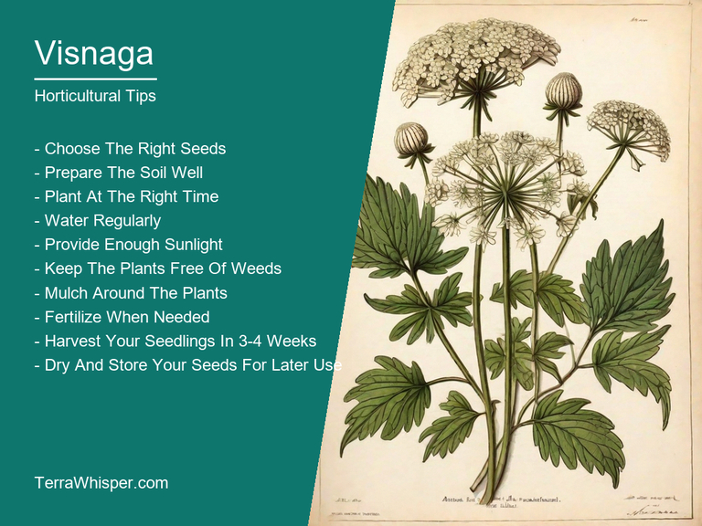
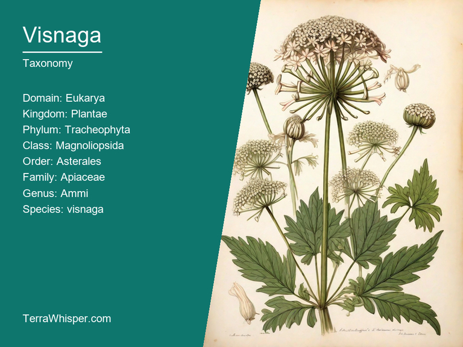
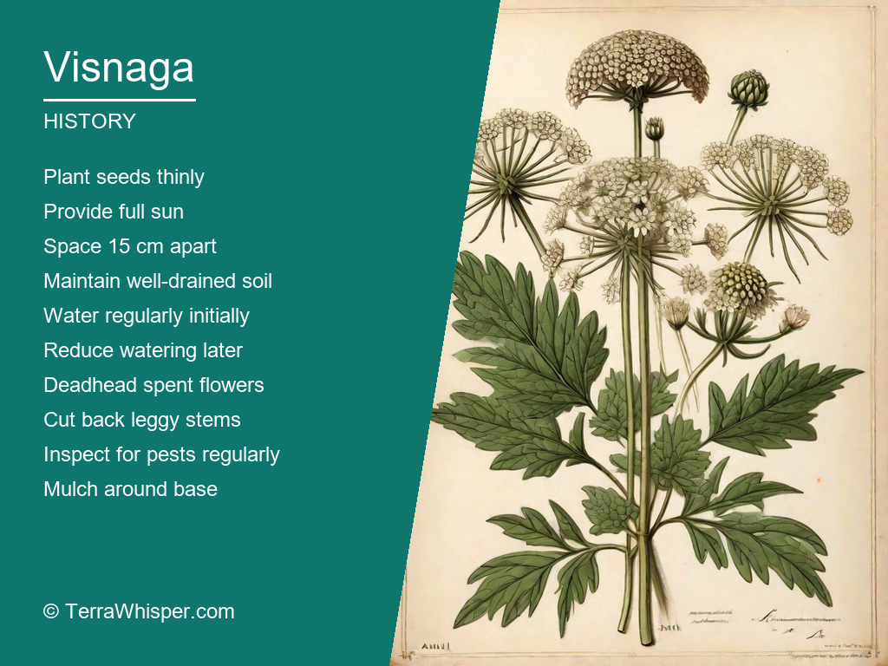

Visnaga, scientifically known as Ammi visnaga, is a versatile plant that has been used for centuries for both its medicinal and culinary properties. This herbaceous biennial plant is native to the Mediterranean region and has been cultivated in many parts of the world due to its numerous health benefits. The seeds, leaves, and roots of visnaga are known to have diuretic, anti-inflammatory, and antispasmodic properties which help in treating various ailments such as urinary tract infections, arthritis, and digestive issues. Moreover, its seeds are used as a spice in many cuisines, particularly in Indian and Middle Eastern cooking. They have a unique flavor that is often compared to fennel and can be added to salads, soups, or stews for an extra kick.
From a horticultural standpoint, visnaga is highly prized for its attractive appearance and ease of cultivation. It boasts beautiful white flowers that resemble Queen Anne's lace and can grow up to two meters tall. The plant thrives in well-drained soil and full sun conditions, making it an ideal choice for gardeners looking to add some visual interest to their outdoor spaces. Visnaga is also relatively low maintenance, requiring minimal watering once established, which makes it a popular choice among those who want to create a drought-tolerant landscape. Additionally, its seeds are attractive to birds and other pollinators, providing valuable habitat for wildlife in urban areas.
Botanically speaking, visnaga belongs to the Apiaceae family, which includes other well-known plants such as carrots, dill, and parsley. This plant has a long history of use dating back thousands of years. Ancient Egyptians used visnaga for medicinal purposes, while in modern times, it is commonly grown for both its ornamental value and culinary applications. The plant's scientific name, Ammi visnaga, is derived from the Arabic word "visna," meaning "to be healthy" or "whole," reflecting its long-standing association with wellness and healing. Overall, visnaga is an adaptable and fascinating plant that offers numerous benefits to both humans and the environment.
In this article, you will discover what are the medicinal and culinary uses of visnaga. Then, you'll learn how to cultivate it, what is its botanical profile, and how it was used historically.
Visnaga (Ammi visnaga) has many health benefits, including its ability to aid digestion and stimulate appetite, improve respiratory system, provide antioxidants that help fight free radicals in our bodies, and act as a potential immune-modulating agent. This versatile plant also offers anti-inflammatory effects for conditions such as arthritis and gout.
The following illustration lists the most important uses of visnaga in medicine.

Visnaga contains various constituents such as essential oils like daucene, terpenoids like farnesol, phenolic compounds including amarins, flavonoid aglycones that impart color, and alkaloids like ammigenin. These components contribute to its numerous medicinal properties.
The most commonly used parts of the visnaga plant for medicinal purposes are its seeds, leaves, and roots. The seeds are often ground into a powder to prepare a paste or capsules, which can then be taken to ease digestive issues such as indigestion, constipation, dysentery, and stomach ulcers. In the traditional Ayurvedic medicine, it has been utilized for treating respiratory illnesses such as bronchitis and asthma. The plant leaves and roots can be applied directly or prepared as herbal teas to alleviate symptoms of coughs, colds, and sore throats.
Although visnaga is generally safe with minimal side effects when consumed at proper dosages, excessive use may cause mild gastrointestinal issues such as nausea, diarrhea, or vomiting. Additionally, people who are allergic to other plants in the Apiaceae family should be cautious about using it since it might trigger an allergic reaction.
To ensure safety and maximize its benefits, one should follow a few essential precautions when consuming visnaga. Firstly, consult with a healthcare professional before starting any new herbal medication, especially if you are currently on prescribed medications or have underlying health conditions. Secondly, it is crucial to use the right dosage as per your age and health condition. Thirdly, purchase visnaga products from reputable sources that follow good manufacturing practices and standardize their ingredients for quality control. Finally, be aware of any adverse reactions and discontinue use if necessary.
Visnaga has a variety of culinary uses. It is commonly used in Spanish, Portuguese, and Mexican cuisines to add crunchiness to dishes such as salads, tacos, and burritos. It can also be roasted or grilled for a smoky flavor and added to dishes such as pasta and rice. In some Mediterranean countries, it is used in the preparation of hummus and other dip-like foods. Overall, visnaga is a versatile ingredient that adds both texture and flavor to many dishes.
The following illustration lists the most common uses of visnaga for culinary purposes.

Visnaga has a mild, slightly sweet flavor with a slight tangy undertone. The flavor is similar to that of sunflower seeds or roasted sesame seeds. When added to dishes, it adds a crunchy texture that complements the flavors of other ingredients. The flavor profile of visnaga makes it a great addition to salads, pastas, and rice dishes. It also pairs well with spicy dishes such as tacos and burritos.
Visnaga is typically used in its raw form for culinary purposes. However, it can also be roasted or grilled for a smoky flavor. The parts of the visnaga that are commonly used in cooking include the seeds and the outer shell. These parts provide the most crunch and are used to add texture to dishes such as salads and tacos. The inner core can also be eaten raw or roasted, but it has a tougher texture than the seeds or shell.
When using visnaga in cooking, there are a few tips to keep in mind. First, always wash the visnaga before using it in dishes. This will help to remove any dirt or debris that may be present on the surface. Second, visnaga can be roasted or grilled for a smoky flavor. To do this, simply toss the seeds or shells with olive oil and salt, then roast them in an oven or grill until they are golden brown. Third, visnaga is a great addition to salads. Simply chop the seeds or shells into small pieces and add them to your salad for added texture and flavor.
Visnaga is generally considered safe to eat. However, as with any food, there may be some potential risks associated with consuming it. Some people may be allergic to visnaga and experience adverse reactions such as hives or difficulty breathing. Additionally, visnaga can contain traces of nitrates, which can be harmful if consumed in large amounts. To minimize these risks, it is important to use visnaga in moderation and only add it to dishes that you plan on eating in small quantities.
Visnaga is a relatively easy-to-grow perennial, which means it returns every year. It prefers full sun to partial shade and well-draining soil. To grow visnaga, start by planting seeds about 2 cm deep and 30 cm apart in early spring or fall. Thin the seedlings to 15-20 cm apart when they are 4 inches tall. Keep the soil moist during germination and water regularly once established. Prune the plant back to the base every three years to encourage new growth.
The following illustration lists the most important tips to cutlitvate visnaga.

Visnaga thrives in a variety of growing conditions, but it prefers warm, well-draining soil with plenty of sunlight. It is a hardy plant that can tolerate both hot and cold temperatures, making it suitable for gardens in many regions. The ideal growing conditions include temperatures between 20°C - 30°C (68°F - 86°F) and full sun exposure. Visnaga also requires good drainage to prevent root rot.
Visnaga is a low-maintenance plant that doesn't require much attention once established. However, it does benefit from regular pruning to maintain its shape and size. Prune back the plant to the base every three years to encourage new growth. In addition, remove any dead or dying branches throughout the year. Visnaga also benefits from fertilization in early spring to promote healthy growth. Use a balanced fertilizer, following the package instructions for application rates.
The Visnaga (Ammi visnaga) belongs to the domain Eukarya, kingdom Plantae, phylum Tracheophyta, class Magnoliopsida, order Apiales, family Apiaceae, and genus Ammi. Common names include Carrot Weed, Chrysanthemum Wormwood, False Caraway, and Roman Coriander.
The following illustration display the botanical profile of visnaga.

As a member of the Apiaceae family, Visnaga has a characteristic umbel inflorescence with white or pale yellow flowers. The leaves are pinnately compound, with each leaflet being linear-lanceolate in shape. The stems are hollow and may branch.
The primary variant is A. visnaga var. cassioides, which has larger flowers and a more robust growth habit than the typical form. A. visnaga var. macrocarpon also exists, characterized by its larger fruits.
Visnaga can be found in the Mediterranean region, especially along the coasts of Spain, France, Italy, and North Africa. It prefers well-drained soils and thrives in full sun or partial shade conditions. In its natural habitat, it is often found growing among other coastal plants such as sea lavender (Limonium) and rock samphire (Crithmum maritimum).
The life cycle of Visnaga is typical for a biennial herbaceous plant. It begins with germination from seeds in the first year followed by vegetative growth. In the second year, it produces flowers and fruits before dying back to the ground level. The seeds are dispersed primarily by wind and can remain viable in the soil for several years.
The plant known as Ammi majus or more commonly referred to by its synonym, Ammi visnaga is a member from the Apiaceae family. Its origins are deeply rooted in history dating back millennia ago when it first evolved alongside humans into our agricultural landscapes and cultural practices across various regions of Asia Minor including Turkey along with India's subcontinent - which makes its etymology rather fascinating too as well given their historical context, religious beliefs or even just simple folklores.
The following illustration lists the most well known historical uses of visnaga.

The Ammi plant species holds a significant cultural role across several ancient and contemporary civilizations which reflect on the value placed by various societies in its versatility as well as for their medicinal properties. It's often mentioned to be an essential part of Ayurvedic herbs commonly found amongst different Indian communities where it has been used since early periods till modern day healthcare systems continue embracing these plants wisdom benefits including treating skin disorders and even improving respiratory health through various natural remedies or supplementation routines.
As a species, the Ammijasniaga plant has inspired numerous mythologies and legends over centuries across different cultures. One such legend originates from Hindu beliefs where it' s related to Lord Shiva' symbolising transformation or rebirth due its ability in regenerating new growth even after cutting down all branches as seen during winter seasons when the flower dies back but returns with fresh blooms once spring arrives again signifying hope and resurrection; other times, this plant plays out within Arabian lore which associates it mystical connections to ancient wisdom keepers who would use its medicinal qualities in treating various ailments.
The plant Ammi has been referenced and praised widely for millennia across diverse cultures as depicted through their literature, poetry or even folk tales which reflect cultural norms prevalent during those eras showcasing how central figures integrated such versatile herbs with varied use cases ranging from treating minor illnesses to enhancing mood via fragrance inhalation therapy based off on personal experiences.
Traditionally, this flowering plant has been used widely within herbal remedies since the times immemorial for its medicinal properties. It's also believed to possess numerous culinary applications given it was a significant staple ingredient in various traditional dishes across several countries due largely because of their distinctive taste profile which makes them perfect addition when looking for some unique flavors while cooking different recipes either during ancient times or right here modern age today - all adding onto the rich heritage carried out by this remarkable plant species.